Regression Methods for Predicting MPG
Daniel J. Park
5/11/2020
Introduction
When measuring a new model’s miles per gallon (mpg) range, automobile manufacturers follow complicated EPA rules that involve multiple drive cycles and formulas. I aim to investigate a dataset of cars to evaluate whether we can predict mpg from a car’s other features rather than physically conducting road tests.
The dataset used for this analysis was published in 1983 and contains data on 398 cars. There are 5 continuous predictors and 3 discrete, multi-valued predictors: number of cylinders engine displacement in cubic inches horsepower weight in pounds time it takes to accelerate from 0 to 60 mph in seconds model year from 1900 model origin (1. American 2. European 3. Japanese) car name.
According to the dataset’s source, UCI Dataset Archive, it was presented at the American Statistical Association’s 1983 Exposition, so we don’t need to be concerned with data collection errors or missing values. My principal goal is interpretability of model coefficients rather than best prediction accuracy, so I won’t scale the variables.
library(GGally)
library(car)
library(MASS)
library(tidyverse)
library(glmnet)
# read the data
mpg.dat <- read.table("http://archive.ics.uci.edu/ml/machine-learning-databases/auto-mpg/auto-mpg.data",
header = FALSE)
colnames(mpg.dat) <- c("mpg", "cylinders", "displacement", "horsepower", "weight", "acceleration",
"model.year", "origin", "car.name")
# modify predictor types
mpg.dat$cylinders <- as.numeric(mpg.dat$cylinders)
mpg.dat$horsepower <- as.numeric(mpg.dat$horsepower)
mpg.dat$origin <- as.factor(mpg.dat$origin)
# remove car name from dataset
mpg.dat <- mpg.dat[ , !(names(mpg.dat) %in% c("car.name"))]str(mpg.dat)## 'data.frame': 398 obs. of 8 variables:
## $ mpg : num 18 15 18 16 17 15 14 14 14 15 ...
## $ cylinders : num 8 8 8 8 8 8 8 8 8 8 ...
## $ displacement: num 307 350 318 304 302 429 454 440 455 390 ...
## $ horsepower : num 17 35 29 29 24 42 47 46 48 40 ...
## $ weight : num 3504 3693 3436 3433 3449 ...
## $ acceleration: num 12 11.5 11 12 10.5 10 9 8.5 10 8.5 ...
## $ model.year : int 70 70 70 70 70 70 70 70 70 70 ...
## $ origin : Factor w/ 3 levels "1","2","3": 1 1 1 1 1 1 1 1 1 1 ...summary(mpg.dat)## mpg cylinders displacement horsepower weight acceleration model.year origin
## Min. : 9.00 Min. :3.000 Min. : 68.0 Min. : 1.00 Min. :1613 Min. : 8.00 Min. :70.00 1:249
## 1st Qu.:17.50 1st Qu.:4.000 1st Qu.:104.2 1st Qu.:26.00 1st Qu.:2224 1st Qu.:13.82 1st Qu.:73.00 2: 70
## Median :23.00 Median :4.000 Median :148.5 Median :60.50 Median :2804 Median :15.50 Median :76.00 3: 79
## Mean :23.51 Mean :5.455 Mean :193.4 Mean :51.39 Mean :2970 Mean :15.57 Mean :76.01
## 3rd Qu.:29.00 3rd Qu.:8.000 3rd Qu.:262.0 3rd Qu.:79.00 3rd Qu.:3608 3rd Qu.:17.18 3rd Qu.:79.00
## Max. :46.60 Max. :8.000 Max. :455.0 Max. :94.00 Max. :5140 Max. :24.80 Max. :82.00One quick take-away from this paired plot is that some of the explanatory variables are strongly correlated with each other. For example, the Pearson correlation between displacement and weight is \(\rho=0.933\). We may have redundant covariates if we use all of them in a full model.
GGally::ggpairs(mpg.dat)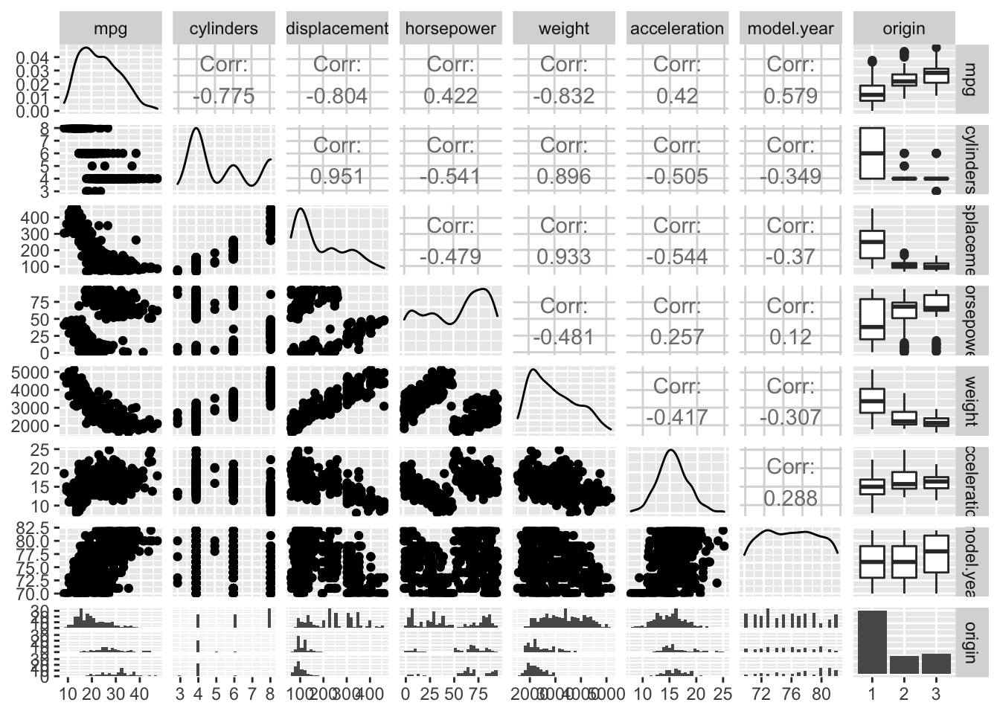
Model Fitting
OLS Linear Regression
Fitting a full model
After fitting a full model with no interactions, we check model diagnostics: As shown in the Fitted Residuals plot, there is a slight quadratic shape to the residuals, so we’ll proceed with caution with the linear model. Heteroskedasticity is clearly evident, we’ll want to consider fixes for this condition. The QQ plot tells us that the errors are approximately normal, although there are some points that deviate from normality on the upper tail. Multicollinearity may also be an issue as the VIF table shows that Cylinders, Displacement, and Weight have the highest VIF values, meaning their coefficients have the highest variance and are not stable.
Large residuals? All 5 cars with the greatest square root absolute standardized residuals belong to European or Japanese origin. I suspect that shifting the best fit line by the Origin coefficient is a reason, and the fix may be to allow interactions between Origin and other covariates.
# full model with no interactions
full.model <- lm(mpg~., data=mpg.dat)
summary(full.model)##
## Call:
## lm(formula = mpg ~ ., data = mpg.dat)
##
## Residuals:
## Min 1Q Median 3Q Max
## -8.9845 -2.1523 0.0788 1.9659 13.3978
##
## Coefficients:
## Estimate Std. Error t value Pr(>|t|)
## (Intercept) -2.266e+01 4.283e+00 -5.290 2.05e-07 ***
## cylinders -2.133e-01 3.330e-01 -0.641 0.52222
## displacement 1.978e-02 7.354e-03 2.689 0.00746 **
## horsepower 1.085e-02 6.719e-03 1.614 0.10729
## weight -7.173e-03 5.829e-04 -12.306 < 2e-16 ***
## acceleration 1.518e-01 7.662e-02 1.981 0.04833 *
## model.year 8.009e-01 5.001e-02 16.016 < 2e-16 ***
## origin2 2.757e+00 5.508e-01 5.006 8.45e-07 ***
## origin3 2.683e+00 5.332e-01 5.032 7.44e-07 ***
## ---
## Signif. codes: 0 '***' 0.001 '**' 0.01 '*' 0.05 '.' 0.1 ' ' 1
##
## Residual standard error: 3.302 on 389 degrees of freedom
## Multiple R-squared: 0.8252, Adjusted R-squared: 0.8216
## F-statistic: 229.5 on 8 and 389 DF, p-value: < 2.2e-16plot(full.model)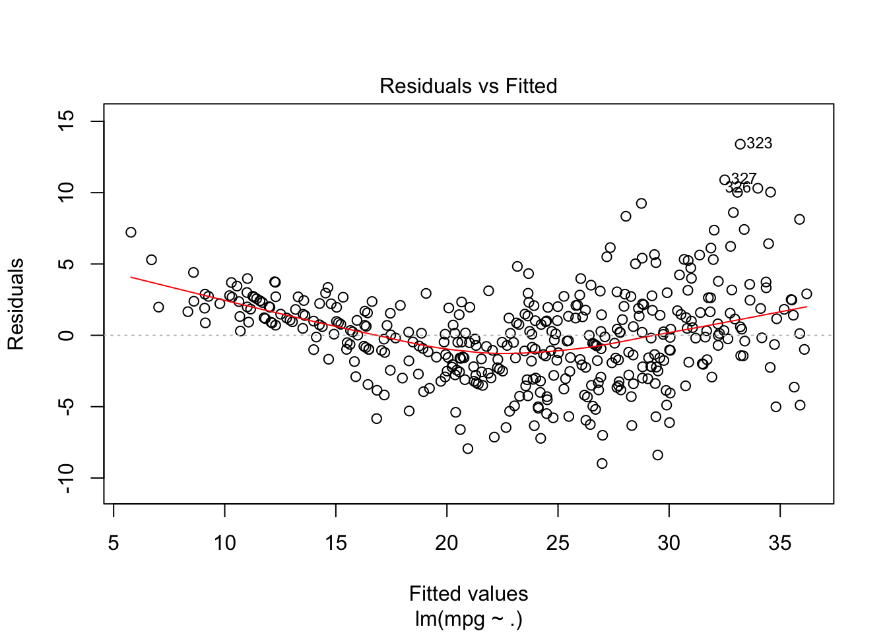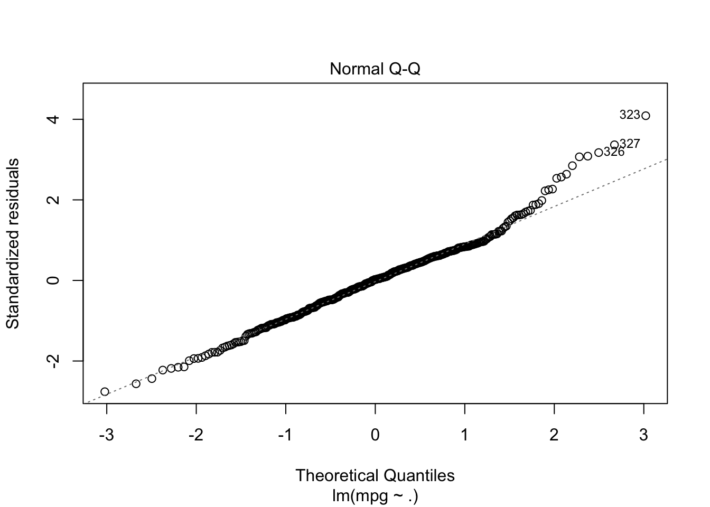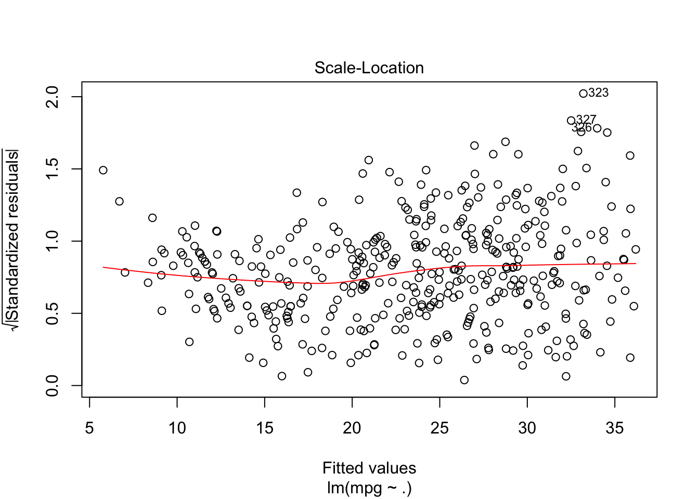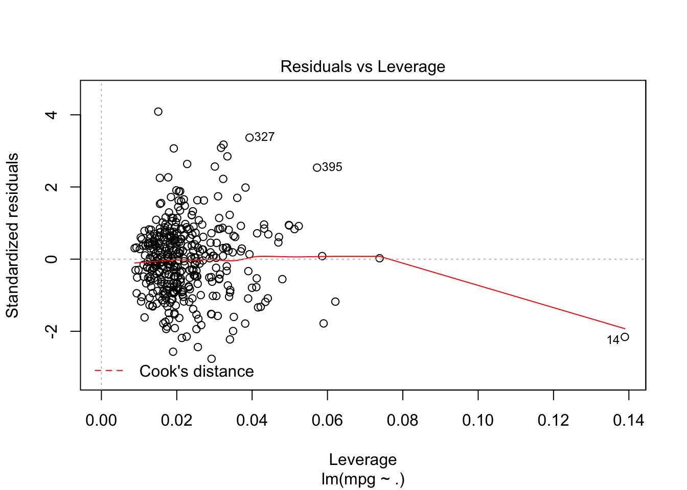
vif(full.model)## GVIF Df GVIF^(1/(2*Df))
## cylinders 11.686649 1 3.418574
## displacement 21.415290 1 4.627666
## horsepower 1.473327 1 1.213807
## weight 8.874018 1 2.978929
## acceleration 1.625951 1 1.275128
## model.year 1.245418 1 1.115983
## origin 1.964610 2 1.183911These are the cars with largest residuals and hat values.
tail(mpg.dat[order(abs(full.model$residuals)), ])## mpg cylinders displacement horsepower weight acceleration model.year origin
## 388 38.0 6 262 81 3015 17.0 82 1
## 245 43.1 4 90 51 1985 21.5 78 2
## 330 44.6 4 91 64 1850 13.8 80 3
## 326 44.3 4 90 51 2085 21.7 80 2
## 327 43.4 4 90 51 2335 23.7 80 2
## 323 46.6 4 86 62 2110 17.9 80 3tail(mpg.dat[order(hatvalues(full.model)),])## mpg cylinders displacement horsepower weight acceleration model.year origin
## 395 44.0 4 97 53 2130 24.6 82 2
## 300 27.2 4 141 68 3190 24.8 79 2
## 335 23.7 3 70 2 2420 12.5 80 3
## 244 21.5 3 80 8 2720 13.5 77 3
## 301 23.9 8 260 86 3420 22.2 79 1
## 14 14.0 8 455 48 3086 10.0 70 1# rstandard()
# hatvalues()Trying a non-linear transformation
Fixes for a non-linear relationship: Transform the response variable mpg. The Box-Cox method suggests a lambda close to 0, which means a log-transformation of the response.
bc = boxcox(full.model)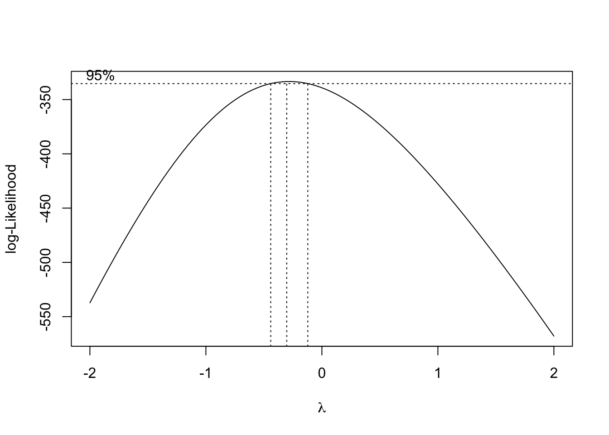
bc$x[which.min(abs(bc$x-0))]## [1] -0.02020202bc$x[which.min(abs(bc$x+0.5))]## [1] -0.5050505Once we regressed the log of mpg on the predictors, the residuals are no longer displaying the heteroskedasticity we saw before, while there is still no apparent non-linear shape and they are still approximately normal. The standardized residuals are also not as large as before. While the interpretability of the coefficients in relation to the response becomes less straightforward, the log transformation seems more appropriate.
# the log-transform model
mpg.dat <- mpg.dat %>% mutate(log.mpg = log(mpg))
log.model <- lm(log.mpg~cylinders+displacement+horsepower+weight+acceleration+model.year+origin, data=mpg.dat)
summary(log.model)##
## Call:
## lm(formula = log.mpg ~ cylinders + displacement + horsepower +
## weight + acceleration + model.year + origin, data = mpg.dat)
##
## Residuals:
## Min 1Q Median 3Q Max
## -0.39835 -0.06964 0.00727 0.07019 0.34235
##
## Coefficients:
## Estimate Std. Error t value Pr(>|t|)
## (Intercept) 1.421e+00 1.542e-01 9.217 < 2e-16 ***
## cylinders -1.561e-02 1.199e-02 -1.302 0.193678
## displacement 4.835e-04 2.648e-04 1.826 0.068580 .
## horsepower 3.900e-04 2.419e-04 1.612 0.107788
## weight -2.974e-04 2.099e-05 -14.172 < 2e-16 ***
## acceleration 5.047e-03 2.759e-03 1.829 0.068100 .
## model.year 3.195e-02 1.801e-03 17.747 < 2e-16 ***
## origin2 8.210e-02 1.983e-02 4.140 4.27e-05 ***
## origin3 6.687e-02 1.920e-02 3.483 0.000551 ***
## ---
## Signif. codes: 0 '***' 0.001 '**' 0.01 '*' 0.05 '.' 0.1 ' ' 1
##
## Residual standard error: 0.1189 on 389 degrees of freedom
## Multiple R-squared: 0.88, Adjusted R-squared: 0.8775
## F-statistic: 356.6 on 8 and 389 DF, p-value: < 2.2e-16plot(log.model)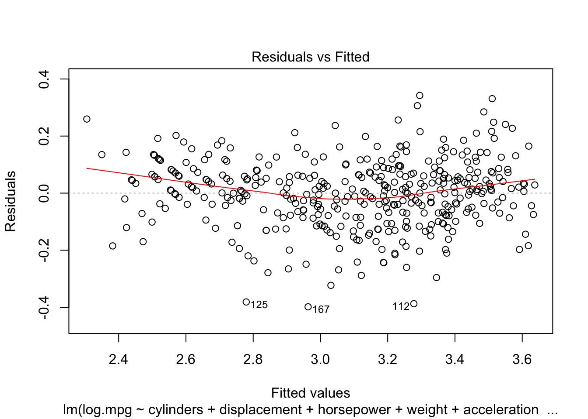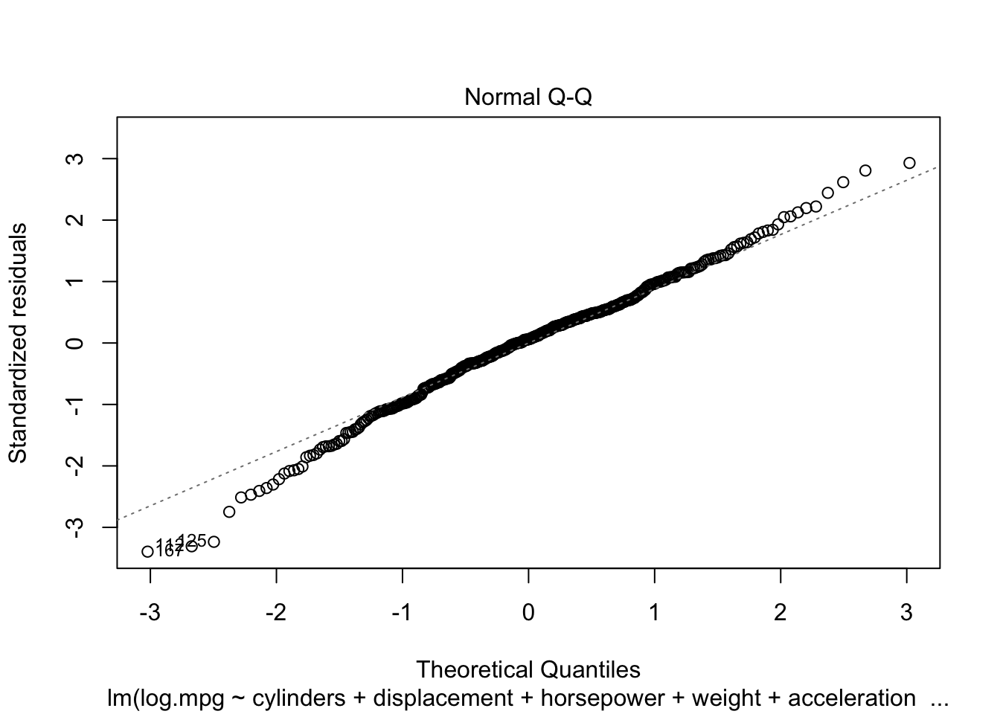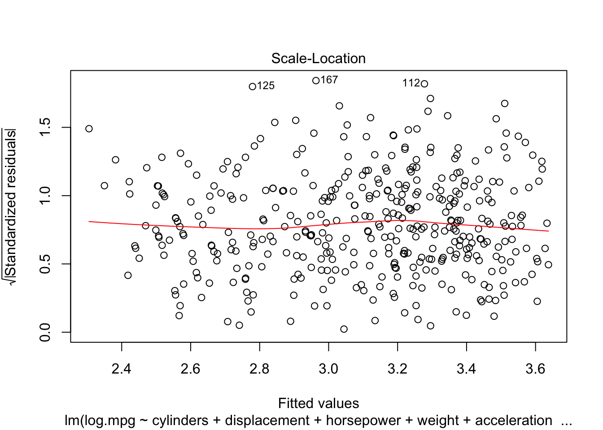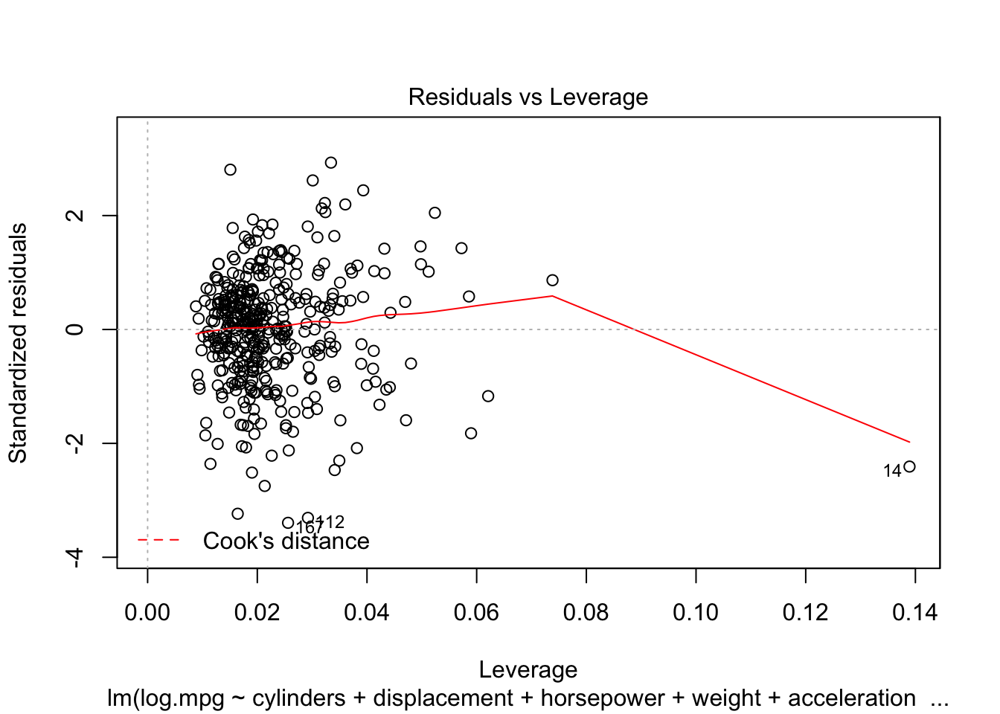
But we still haven’t addressed multicollinearity.
vif(log.model)## GVIF Df GVIF^(1/(2*Df))
## cylinders 11.686649 1 3.418574
## displacement 21.415290 1 4.627666
## horsepower 1.473327 1 1.213807
## weight 8.874018 1 2.978929
## acceleration 1.625951 1 1.275128
## model.year 1.245418 1 1.115983
## origin 1.964610 2 1.183911Fixing multicollinearity
Manual step-wise
We could drop high-VIF predictors one-by-one.
n = nrow(mpg.dat)
log.model2 <- lm(log.mpg~cylinders+horsepower+weight+acceleration+model.year+origin, data=mpg.dat)
vif(log.model2)## GVIF Df GVIF^(1/(2*Df))
## cylinders 6.704402 1 2.589286
## horsepower 1.446533 1 1.202719
## weight 5.349929 1 2.312991
## acceleration 1.397551 1 1.182181
## model.year 1.210921 1 1.100419
## origin 1.749719 2 1.150117log.model3 <- lm(log.mpg~horsepower+weight+acceleration+model.year+origin, data=mpg.dat)
vif(log.model3)## GVIF Df GVIF^(1/(2*Df))
## horsepower 1.316510 1 1.147393
## weight 2.137783 1 1.462116
## acceleration 1.286676 1 1.134318
## model.year 1.173172 1 1.083131
## origin 1.634735 2 1.130738Automatic step-wise
Or perform bidirectional stepwise regression using AIC criterion.
step.reg <- step(log.model, direction = "both", trace = 0)
summary(step.reg)##
## Call:
## lm(formula = log.mpg ~ horsepower + weight + model.year + origin,
## data = mpg.dat)
##
## Residuals:
## Min 1Q Median 3Q Max
## -0.40747 -0.07343 0.00898 0.07325 0.36718
##
## Coefficients:
## Estimate Std. Error t value Pr(>|t|)
## (Intercept) 1.4527173 0.1442389 10.072 < 2e-16 ***
## horsepower 0.0004863 0.0002284 2.129 0.03390 *
## weight -0.0002785 0.0000100 -27.842 < 2e-16 ***
## model.year 0.0319265 0.0017152 18.614 < 2e-16 ***
## origin2 0.0739289 0.0182588 4.049 6.2e-05 ***
## origin3 0.0564397 0.0184204 3.064 0.00234 **
## ---
## Signif. codes: 0 '***' 0.001 '**' 0.01 '*' 0.05 '.' 0.1 ' ' 1
##
## Residual standard error: 0.1192 on 392 degrees of freedom
## Multiple R-squared: 0.8784, Adjusted R-squared: 0.8769
## F-statistic: 566.4 on 5 and 392 DF, p-value: < 2.2e-16plot(step.reg)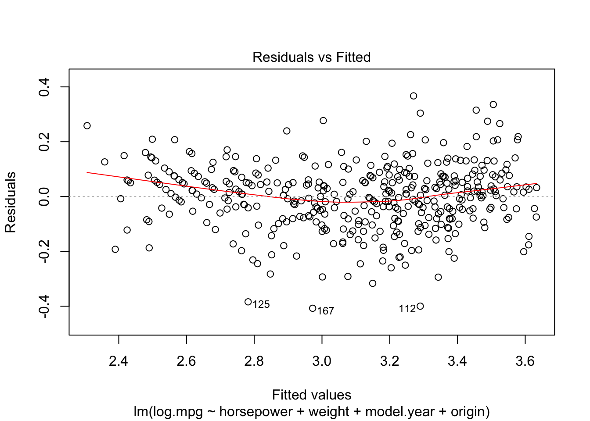 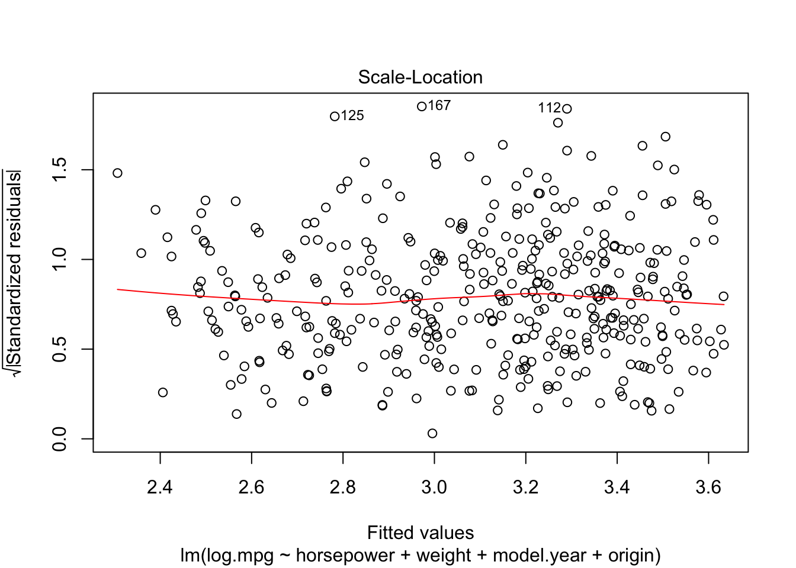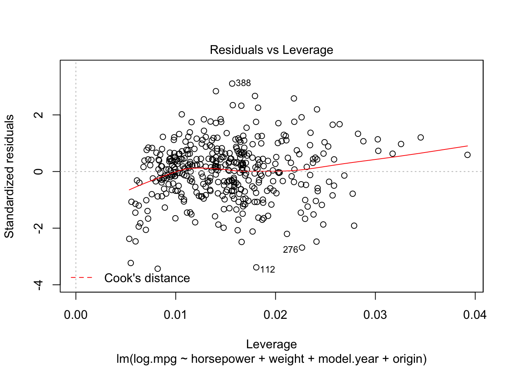
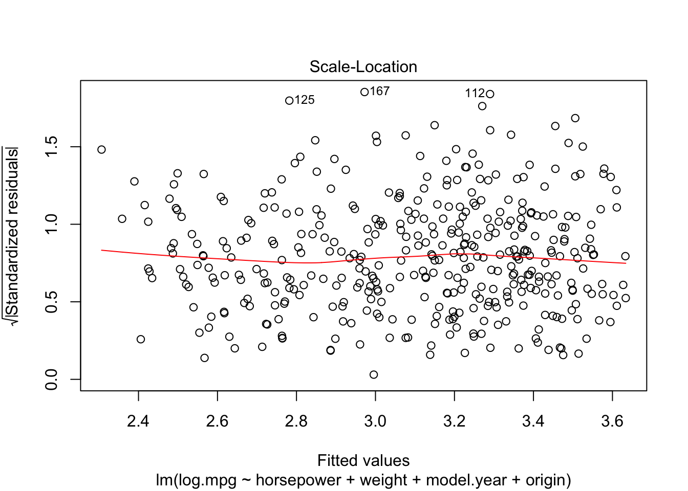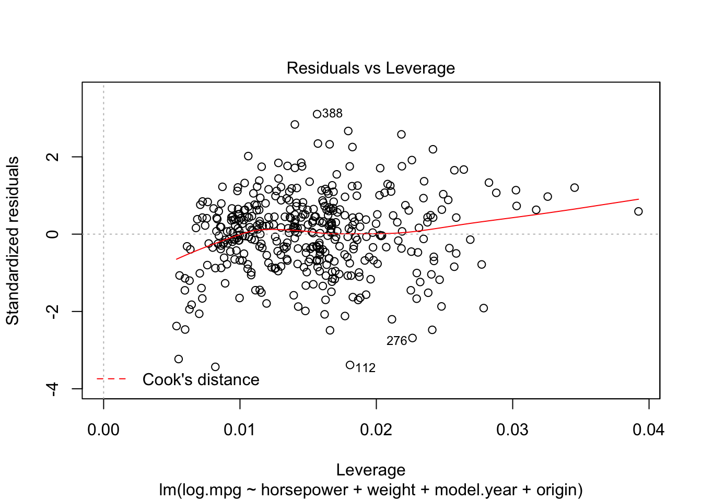
Multicollinearity not an issue.
vif(step.reg)## GVIF Df GVIF^(1/(2*Df))
## horsepower 1.306628 1 1.143078
## weight 2.005231 1 1.416062
## model.year 1.124113 1 1.060242
## origin 1.602977 2 1.125205mpg.dat <- mpg.dat %>% mutate("log.hats"=predict(step.reg))
ggplot(mpg.dat, aes(model.year, exp(log.hats), colour = origin)) +
geom_point() +
labs(x="Years since 1900", y="Predicted mpg") +
scale_color_hue(labels = c("American", "European", "Japanese"))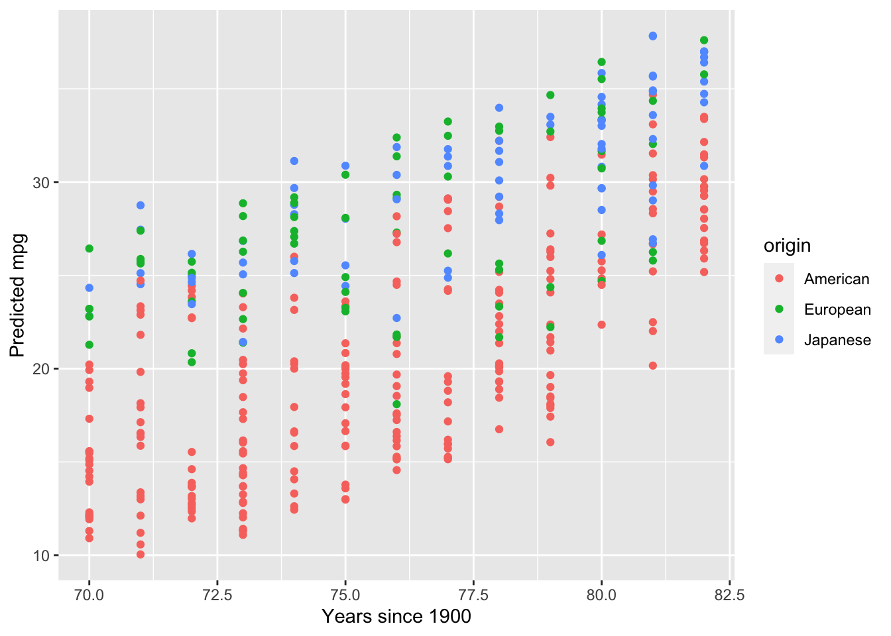
avPlots(step.reg)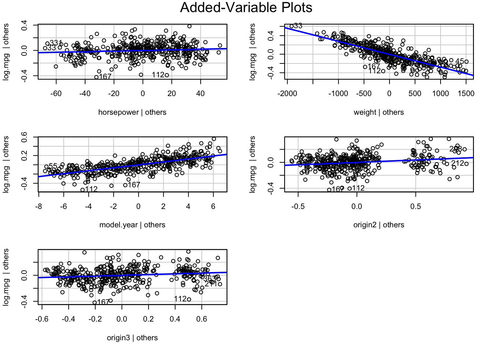
LASSO regularization
Now I want to try a regularization method for regressing the log(mpg). LASSO regularization allows coefficients to shrink to zero, which is acceptable since I know some covariates are not necessary.
mpg.x = model.matrix(log.mpg ~ cylinders+displacement+horsepower+weight+acceleration+model.year+origin,
data=mpg.dat)
mpg.y = mpg.dat$log.mpg
mpg.fit.lasso = glmnet(mpg.x, mpg.y, alpha=1)
plot(mpg.fit.lasso, xvar="lambda", label=TRUE)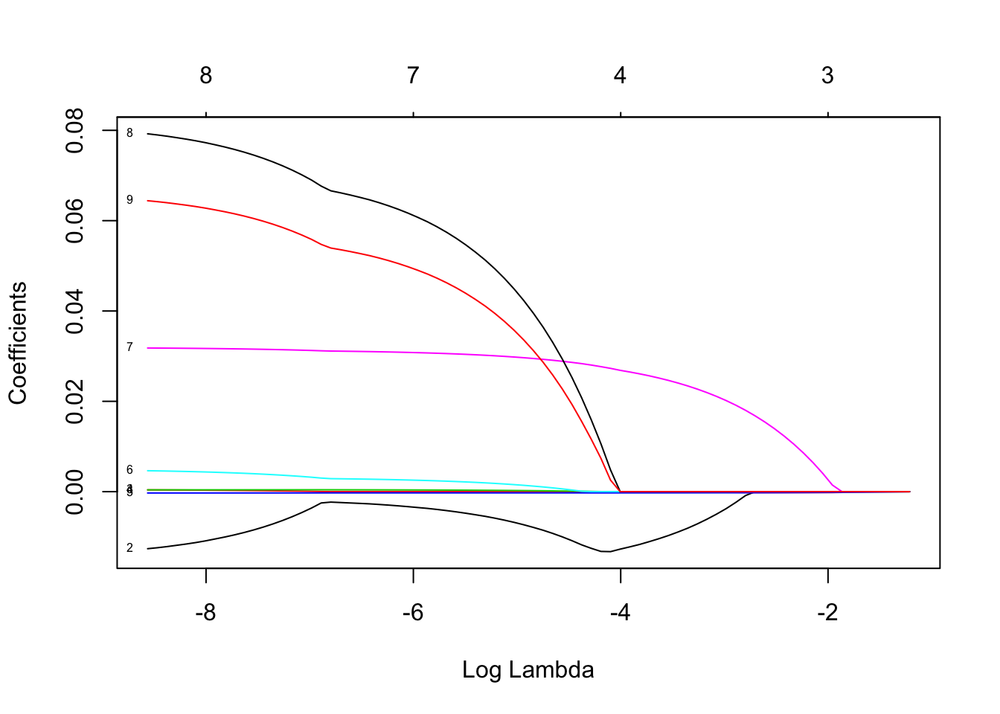
# cross validation to find optimal lambda regularization parameter
mpg.cv.lasso = cv.glmnet(mpg.x, mpg.y, alpha=1)
plot(mpg.cv.lasso)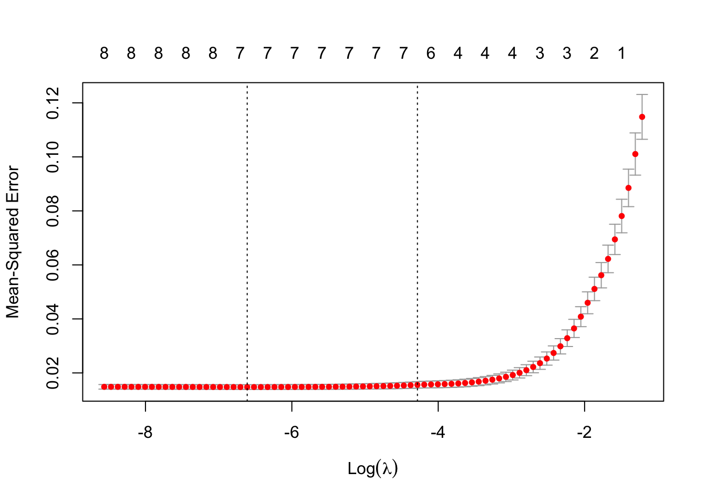
coef(mpg.cv.lasso, s = "lambda.min")## 10 x 1 sparse Matrix of class "dgCMatrix"
## 1
## (Intercept) 1.4839800014
## (Intercept) .
## cylinders -0.0026984864
## displacement .
## horsepower 0.0004020441
## weight -0.0002727694
## acceleration 0.0027589503
## model.year 0.0310092286
## origin2 0.0646169227
## origin3 0.0522665112opt.lambda <- mpg.cv.lasso$lambda.minLASSO regularization shrunk the coefficient for Displacement completely to zero. Our \(R^2\) is slightly higher than the stepwise regression model.
x <- mpg.x
y_predicted <- predict(mpg.fit.lasso, s = opt.lambda, newx=mpg.x)
y <- mpg.y
# Sum of Squares Total and Error
ssto <- sum((y - mean(y))^2)
sse <- sum((y_predicted - y)^2)
# R squared
rsq <- 1 - sse / ssto
rsq## [1] 0.8788694Further research: Interaction terms (the response might vary differently according to the car origin). At first, the interaction terms don’t look significant and may not be parsimonious.
model.interact <- lm(log.mpg ~ horsepower*origin +
weight*origin +
model.year*origin,
data = mpg.dat)
summary(model.interact)##
## Call:
## lm(formula = log.mpg ~ horsepower * origin + weight * origin +
## model.year * origin, data = mpg.dat)
##
## Residuals:
## Min 1Q Median 3Q Max
## -0.40983 -0.06802 0.00546 0.07019 0.38421
##
## Coefficients:
## Estimate Std. Error t value Pr(>|t|)
## (Intercept) 1.606e+00 1.849e-01 8.688 < 2e-16 ***
## horsepower 4.268e-04 2.752e-04 1.551 0.12176
## origin2 -7.235e-01 3.688e-01 -1.962 0.05052 .
## origin3 1.212e-02 3.753e-01 0.032 0.97426
## weight -2.751e-04 1.126e-05 -24.422 < 2e-16 ***
## model.year 2.978e-02 2.209e-03 13.480 < 2e-16 ***
## horsepower:origin2 1.055e-03 6.017e-04 1.753 0.08045 .
## horsepower:origin3 -3.675e-04 6.719e-04 -0.547 0.58475
## origin2:weight -2.986e-05 3.175e-05 -0.941 0.34747
## origin3:weight -1.133e-04 4.342e-05 -2.609 0.00944 **
## origin2:model.year 1.072e-02 4.692e-03 2.285 0.02286 *
## origin3:model.year 4.254e-03 4.421e-03 0.962 0.33657
## ---
## Signif. codes: 0 '***' 0.001 '**' 0.01 '*' 0.05 '.' 0.1 ' ' 1
##
## Residual standard error: 0.1175 on 386 degrees of freedom
## Multiple R-squared: 0.8836, Adjusted R-squared: 0.8803
## F-statistic: 266.5 on 11 and 386 DF, p-value: < 2.2e-16Use more recent data (the dataset is from 1983). Different algorithms to decrease MSE. Regression trees, GAMs.
What if we tried IRLS on a non-transformed response to address heteroskedasticity? I still see a slight curved shape to the fitted residuals, which could mean that a linear relationship is not the most appropriate.
library(nlme)
mpg.irls <- gls(mpg~cylinders+displacement+weight+acceleration+model.year+origin,
weights=varPower(),
data=mpg.dat)
summary(mpg.irls)## Generalized least squares fit by REML
## Model: mpg ~ cylinders + displacement + weight + acceleration + model.year + origin
## Data: mpg.dat
## AIC BIC logLik
## 2057.529 2097.191 -1018.765
##
## Variance function:
## Structure: Power of variance covariate
## Formula: ~fitted(.)
## Parameter estimates:
## power
## 1.51758
##
## Coefficients:
## Value Std.Error t-value p-value
## (Intercept) -5.493775 3.561487 -1.542551 0.1238
## cylinders -1.141209 0.208821 -5.465022 0.0000
## displacement 0.008712 0.004480 1.944565 0.0525
## weight -0.004002 0.000387 -10.353858 0.0000
## acceleration -0.094411 0.070628 -1.336722 0.1821
## model.year 0.600498 0.043046 13.950301 0.0000
## origin2 2.218523 0.601623 3.687565 0.0003
## origin3 3.096075 0.644750 4.801978 0.0000
##
## Correlation:
## (Intr) cylndr dsplcm weight acclrt mdl.yr orign2
## cylinders -0.187
## displacement -0.188 -0.401
## weight 0.051 -0.279 -0.642
## acceleration -0.211 0.030 0.621 -0.476
## model.year -0.909 0.031 0.080 0.025 -0.132
## origin2 -0.257 0.204 0.240 -0.170 0.185 0.101
## origin3 -0.182 0.143 0.218 -0.086 0.236 -0.001 0.359
##
## Standardized residuals:
## Min Q1 Med Q3 Max
## -2.89960079 -0.60497103 -0.01613686 0.57557967 3.71129808
##
## Residual standard error: 0.02708439
## Degrees of freedom: 398 total; 390 residualplot(mpg.irls)